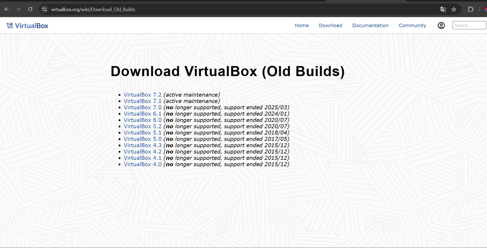
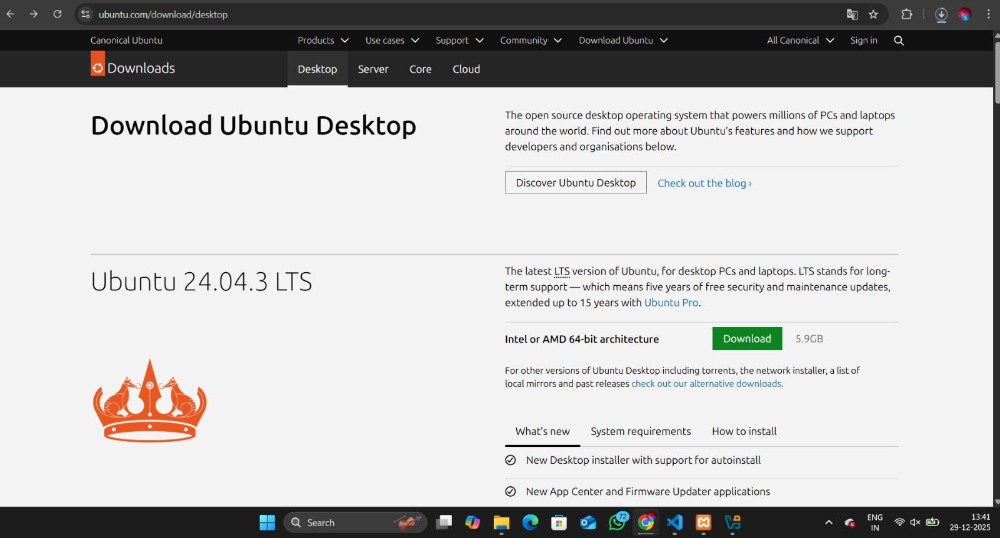
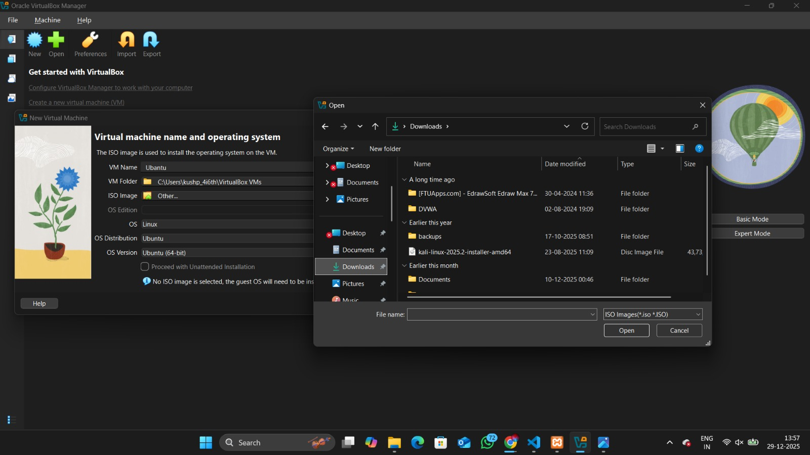
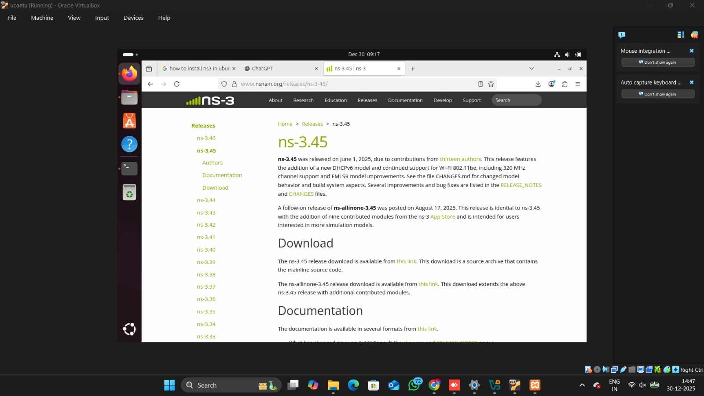

1
Install Oracle VM VirtualBox 7.2.2
Download and install Oracle VM VirtualBox to create a virtual environment for NS-3.
📥 Download: Visit virtualbox.org and download version 7.2.2
Installation Steps:
- Run the installer with administrator privileges
- Follow the installation wizard
- Keep all default settings
- Complete the installation and restart if prompted

2
Download Ubuntu 24.03.0.3
Get the Ubuntu ISO file to set up your Linux environment.
📥 Download: Visit ubuntu.com and download Ubuntu 24.03.0.3
Note: The ISO file will be approximately 4-5 GB. Ensure you have sufficient
disk space.

3
Create Ubuntu Virtual Machine
Set up a new virtual machine in VirtualBox with the following specifications:
💾 Recommended Specifications:
- Memory (RAM): 4 GB minimum (8 GB recommended)
- Hard Disk: 100 GB
- CPU Cores: 2-4 cores (Cis12 = 6 core)
Steps:
- Open VirtualBox and click "New"
- Name: "Ubuntu NS3"
- Type: Linux
- Version: Ubuntu (64-bit)
- Allocate memory and create virtual hard disk
- Mount the Ubuntu ISO file

4
Install Ubuntu Prerequisites for NS-3
After installing Ubuntu, update the system and install required packages.
sudo apt update && sudo apt upgrade -y
Install build tools and dependencies:
sudo apt install -y g++ python3 python3-dev pkg-config sqlite3 cmake python3-setuptools git qtbase5-dev qtchooser qt5-qmake qtbase5-dev-tools gir1.2-goocanvas-2.0 python3-gi python3-gi-cairo python3-pygraphviz gir1.2-gtk-3.0 ipython3 tcpdump wireshark
5
Download NS-3 (Version 3.45 or Latest)
Download the NS-3 all-in-one package from the official website.
📥 Download: Visit nsnam.org/releases
Or download directly using wget:
cd ~
wget https://www.nsnam.org/releases/ns-allinone-3.45.tar.bz2
tar xjf ns-allinone-3.45.tar.bz2
cd ns-allinone-3.45

6
Install NS-3 in Ubuntu
Build and install NS-3 on your Ubuntu system.
cd ns-allinone-3.45
./build.py --enable-examples --enable-tests
⏱️ Note: This process may take 15-30 minutes depending on your system
specifications.
After installation, configure NS-3:
cd ns-3.45
./ns3 configure --enable-examples --enable-tests
./ns3 build
Test your installation:
./ns3 run hello-simulator
✅ Success: If you see "Hello Simulator" output, NS-3 is successfully installed!
7
Find Step-by-Step Installation Resources
Access comprehensive tutorials and documentation for detailed guidance.
📚 Recommended Resources:
- Official NS-3 Documentation
- NS-3 Tutorial
- Search Google for "NS-3 installation tutorial" for video guides